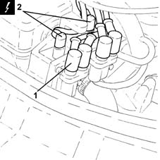
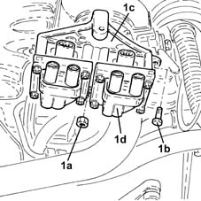

1036B32 camshaft seal support with ignition coil r + r including seal replacement
- Path
- Procedures > 10 ENGINE > 1036 TIMING SYSTEM > 1036B overhead camshaft > 1036B32 camshaft seal support with ignition coil r + r including seal replacement
- Kind
- repair procedure (removal / refitting; the operation number is the code)
- Applies to
- engines: 1.2 8v; all production periods
- Interactive page
- https://sloeber94.github.io/elrnDB-lYpsln/en/#/2428897
Applies to: engines: 1.2 8v; all production periods
 Removing
Removing
 Refitting
RefittingProceed with removal 1048A10 air cleaner filtering element - replace .
Proceed with removal 5530B10 battery - r+r .
Proceed with removal 5530B52 Battery DRIP TRAY/SUPPORT - R.R. .
1. Disconnect the high tension leads from the ignition coil.
2. Disconnect the electrical connections from the ignition coils.
 | Name | Connector |
|---|---|---|
2 | Ignition 'coil |

Applies to: engines: 1.2 8v; all production periods
1. Undo nuts (1a), bolt (1b) and remove the camshaft seal mount (1c) with ignition coils (1d).

Applies to: engines: 1.2 8v; all production periods
Refitting
RemovingFit the camshaft seal mount with coil and secure it by tightening the bolt and the nuts.
Connect the electrical connections to the ignition coils.
Connect the high tension leads to the ignition coils.
Proceed with refitting 5530B52 Battery DRIP TRAY/SUPPORT - R.R. .
Proceed with refitting 5530B10 battery - r+r .
Proceed with refitting 1048A10 air cleaner filtering element - replace .
Topics linked from this page (4)
- 1048A10 air cleaner filtering element - replace
- 5530B10 battery - r+r
- 5530B52 Battery DRIP TRAY/SUPPORT - R.R.
- A30 Ignition 'coil